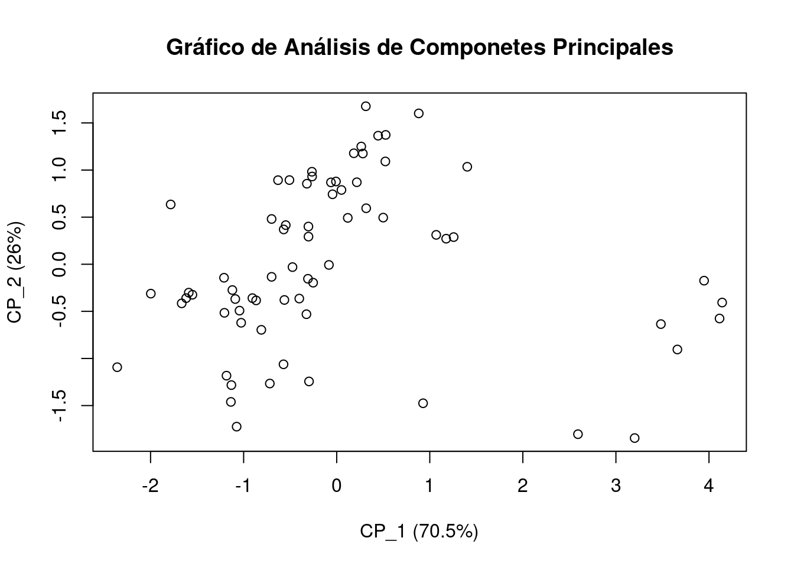
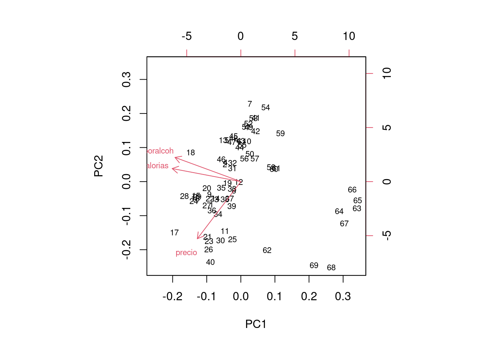
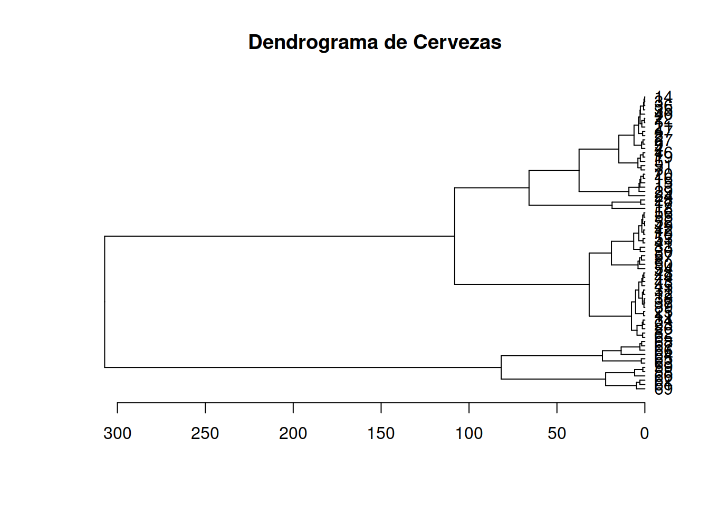
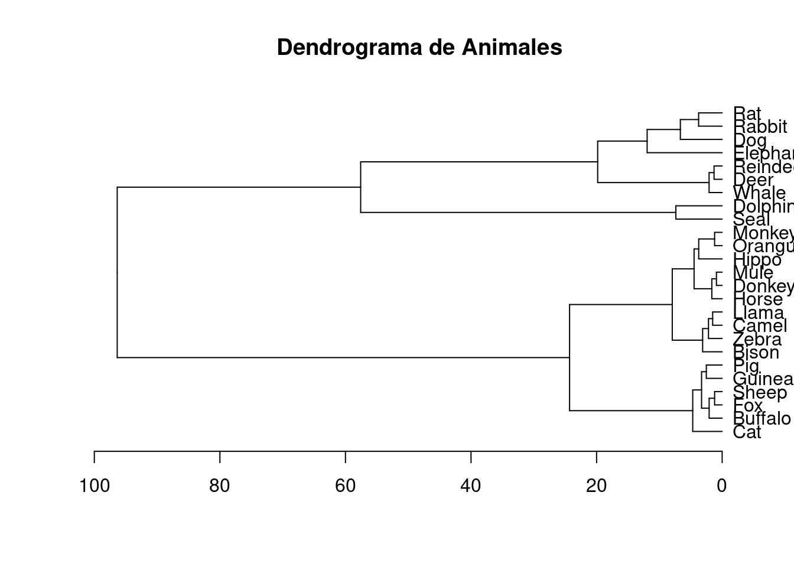

Código R -Tutorial 301
Modelos Estadísticos para la toma de decisiones
A continuación se presentan los problemas relacionados en los tutoriales 301 que en algunos casos han presentado problemas en el momento de su instalación
paquetes requeridos
library(learnr) library(paqueteMOD) library(boot) library(ggplot2) library(gridExtra) library(knitr) library(broom) library(stargazer)
PRESENTACIÓN

El presente tutorial contiene preguntas relacionadas con el Análisis de Componentes Principales (ACP o PCA) y el Análisis de Custer o de Conglomerados (AC) sus supuestos, conceptos más importantes.
CONCEPTOS
Análisis de Componentes Principales
Componentes principales
Corresponde a combinaciones lineales de las variables originales que representan la mayor parte de la variación en los datos. El primer componente principal (\(CP_1\)) explica la mayor cantidad de variación posible, y los siguientes componentes principales explican la mayor cantidad de variación restante.
Varianza
Es una medida de la cantidad de variación que contienen los datos. El ACP, buscando capturar la mayor cantidad de esta varianza mediante los componentes principales que maximizan la varianza.
Autovectores y autovalores
Corresponde a valores matemáticos que son utilizados para el cálculo los componentes principales. Los autovectores son vectores que no cambian de dirección cuando se transforman por una matriz dada, mientras que los autovalores son escalares que indican la magnitud de la transformación.
Reducción de la dimensionalidad:
Es el proceso de transformar un conjunto de datos multivariables en un conjunto de datos de menor dimensión, por lo general 2 o 3 que permiten realizar una analisis vusual (2D y 3D), mediante la selección de los componentes principales más importantes.
Análisis de Cluster
Similaridad
Es un indicador que mide que tan parecidos son dos objetos en en términos de sus características o atributos.
Distancia
Es un indicador que valora la separación que hay entre dos objetos en función de sus características. Estos indicadores se utilizan para determinar la construcción de los grupos. Entre los indicadores de distancia estan:
- Distancia euclidiana (distancia más utilizada - algoritmo k-medias)
- Distancia de Manhattan
- Distancia de Chebyshev
- Distancia de Minkowski
- Distancia de correlación son tan importantes como las relaciones entre ellas.
Métodos de agrupamiento
Métodos para agrupar los objetos.
- métodos jerárquicos
- métodos no jerárquicos.
Función objetivo
Corresponde a una función que se utiliza para determinar el número óptimo de clústeres y para evaluar la calidad de los clústeres.
Validación de clústeres
La validación de clústeres se utiliza para determinar si los clústeres son significativos y útiles.
PROBLEMAS
Problema 1
La base beer2 contenida en paqueteMOD
contiene las siguientes características de un conjunto de 69 marcas
diferentes de cervezas:
- precio : precio por unidad de 12 oz
- calorias : cantidad de calorías por unidad de 12 oz
- poralcoh : porcentaje de alcohol por unidad de 12 oz
Reduzca el número de variables utilizando Componentes Principales
Nota: En ocasiones es posible darle nombre a cada uno de los componentes observando los pesos de las variables en sus respectivos componentes principales. En este caso se espera que uno de los componentes resuma las variables relacionadas con las características de composición de la cerveza y que el precio quede separado en un segundo componente. Valide estos resultados esperados.
library(paqueteMOD)
data("beer")
ACP = prcomp(beer2, center=TRUE, scale=TRUE)
summary(ACP)## Importance of components:
## PC1 PC2 PC3
## Standard deviation 1.454 0.8824 0.32606
## Proportion of Variance 0.705 0.2595 0.03544
## Cumulative Proportion 0.705 0.9646 1.00000# se puede observar que entre los dos primeros componentes se concentra el 96% de la variacion de la dataProblema 2
La base beer2 contenida en paqueteMOD
contiene las siguientes características de un conjunto de 69 marcas
diferentes de cervezas:
- precio : precio por unidad de 12 oz
- calorias : cantidad de calorías por unidad de 12 oz
- poralcoh : porcentaje de alcohol por unidad de 12 oz
- tipo : 1-lager artesanal, 2-clara artesanal, 3-lager importada, 4-cerveza normal y helada, y 5-cerveza baja en calorías y sin alcohol
- origen : 0-nacional, 1- importada.
Al extraer los componentes principales de una base de datos permite además de encontrar nuevas variables llamadas componentes, contar con gráficos que permiten visualizar la relación que existe entre las variables, para ello se requiere construir el circulo de correlaciones (representación de variables)
Construya el gráfico de varibles y confirme las relaciones entre las variables descritas en las composiciones de los dos componentes principales resultantes :
library(paqueteMOD)
data("beer")
ACP = prcomp(beer2, center=TRUE, scale=TRUE)
plot(ACP$x[,1], ACP$x[,2],
xlab = paste0("CP_1 (", round(summary(ACP)$importance[2,1]*100,1), "%)"),
ylab = paste0("CP_2 (", round(summary(ACP)$importance[2,2]*100,1), "%)"),
main = "Gráfico de Análisis de Componetes Principales")
Problema 3
La base beer contenida en paqueteMOD
contiene las siguientes características de un conjunto de 69 marcas
diferentes de cervezas:
- precio : precio por unidad de 12 oz
- calorias : cantidad de calorías por unidad de 12 oz
- poralcoh : porcentaje de alcohol por unidad de 12 oz
- tipo : 1-lager artesanal, 2-clara artesanal, 3-lager importada, 4-cerveza normal y helada, y 5-cerveza baja en calorías y sin alcohol
- origen : 0-nacional, 1- importada.
Al realizar una análisis de componentes principales sobre una base de datos es posible representar tanto los individuos como las variables en un solo gráfico, permitiendo observar las relaciones entre variables e individuos
Muestre la representación simultanea de individuos y variables en el primer plano factorial
library(paqueteMOD)
data("beer")
ACP = prcomp(beer[,2:4], center=TRUE, scale=TRUE)
biplot(ACP, cex=0.7)
# además de la relación entre las variables, visualiza que unas marcas están en los ejes positivos mientras otras se alejanProblema 3
La base beer contenida en paqueteMOD
contiene las siguientes características de un conjunto de 69 marcas
diferentes de cervezas:
- precio : precio por unidad de 12 oz
- calorias : cantidad de calorías por unidad de 12 oz
- poralcoh : porcentaje de alcohol por unidad de 12 oz
- tipo : 1-lager artesanal, 2-clara artesanal, 3-lager importada, 4-cerveza normal y helada, y 5-cerveza baja en calorías y sin alcohol
- origen : 0-nacional, 1- importada.
Ahora se plantea realizar un Análisis de Conglomerados permita clasificar las cervezas en grupos, utilizando para ellos medidas denominadas de disimilaridad dentro de las cuales se destaca la distancia euclidiana y ténico o procedimientos como el método del vecino más cercano.
Use la función kmeans contenida en el paquete `` para
encontrar análisis de conglomerados optimo mediante kmeans,
library(paqueteMOD)
data("beer")
# se prepara la data
M=beer[,2:4]
d <- dist(M, method = "euclidean") # Calculamos la matriz de distancia
hc <- hclust(d, method = "ward.D2") # Realizamos la clusterización
# Visualizamos los resultados en un dendrograma
plot(as.dendrogram(hc),horiz=TRUE , main = "Dendrograma de Cervezas")
# Problema 4
La base de datos animals de paqueteMOD
contiene la composición de la leche de 25 especies de animales :
- water: porcentaje de agua.
- protein: porcentaje de proteína.
- fat: porcentaje de grasa.
- lactose: porcentaje de lactosa.
- ash: porcentaje de cenizas.
El análisis de conglomerados permite clasificar las observaciones en grupos, utilizando para ellos medidas denominadas de disimilaridad dentro de las cuales se destaca la distancia euclidiana y ténico o procedimientos como el método del vecino más cercano.
Use la función kmeans contenida en el paquete `` para
encontrar análisis de conglomerados optimo mediante kmeans,
Nota : Esta función se tiene el argumento
centers el cual es el numero optimo de grupos que encontró
anteriormente
Calcule el dendograma del conjunto de datos, primero calcule las
distancias euclidianas mediante la función dist y despues
el dendograma con la función hclust
library(paqueteMOD)
data("animals")
# se prepara la data
d <- dist(animals, method = "euclidean") # Calculamos la matriz de distancia
hc <- hclust(d, method = "ward.D2") # Realizamos la clusterización
# Visualizamos los resultados en un dendrograma
plot(as.dendrogram(hc),horiz=TRUE , main = "Dendrograma de Animales")